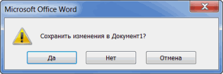
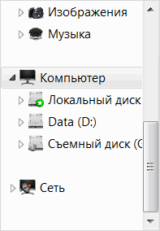
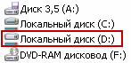
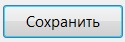
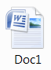

Сохранение документа в Ворде
Процедура записи напечатанного текста на компьютер называется «Сохранение». Благодаря ей мы вносим документ на Локальный диск, в Документы, на Рабочий стол и в другие компьютерные места.
Сохранение в программе Word – это когда при помощи некоторых действий мы из напечатанного текста (документа) делаем файл, который потом можно будет открывать на компьютере, записывать на диск, на флешку, пересылать по интернету.
Допустим, мне нужно ввести много данных. За один день я точно не управлюсь. И вот я набрал какое-то количество и решил продолжить печатание завтра. Для того чтобы это было возможно, нужно частично готовый документ записать (сохранить) на компьютер. Сделав сохранение, я завтра смогу открыть напечатанный текст и продолжить работу с того места, где остановился.
Как НЕправильно сохранять
Записать текст на ПК можно несколькими способами. Поговорим о том, как это НЕ нужно делать.
Многие люди не сохраняют данные во время работы, а делают это в конце. Дело в том, что, когда Вы пытаетесь закрыть Word, уже напечатав там что-нибудь, то выскакивает окошко, в котором система «спрашивает», сохранять ли изменения.
Если нажмете на кнопку «Да», появится новое окошко, где нужно выбрать место для файла, дать ему название и кликнуть по «Сохранить».
Щелкнув же «Нет», компьютер закроет Ворд вместе с текстом, и открыть Вы его уже не сможете. То есть информация безвозвратно исчезнет. А если Вы щелкнете «Отмена», то компьютер оставит открытым Word вместе с напечатанным текстом. Тем самым программа дает Вам возможность что-то подправить, изменить текст.
Но лучше все-таки сохранять другим способом. И не в самом конце работы, а время от времени. Дело в том, что есть вероятность потери документа. Например, скачок электричества или зависание Windows. Если вдруг такое произойдет, Ваш текст может не запишется. Это значит, Вы его потеряете. Кстати, это касается не только программы Word, но и любого другого приложения: Paint, Excel, Photoshop и т.д.
Как правильно сохранять
Для того, чтобы сохранить набранные данные, нужно нажать на надпись «файл» в левом верхнем углу программы.
Если Вы работаете в программе Word версии 2007, то вместо «Файл» у Вас будет круглая кнопка с картинкой (цветными квадратиками) внутри.
Кликнув по ней, откроется окошко. В нем нас интересует пункт «Сохранить как...».
Щелкните по нему. Откроется новое окошко. В нем система предлагает выбрать место, куда записать файл — оно указано в верхней строке.
В примере на картинке компьютер предлагает сохранить текст в папку «Документы». Но лучше записать его на какой-нибудь Локальный диск, например, на D. Для этого в окошке нужно выбрать «Этот компьютер» с левой стороны.
После этого внутри окошка (в белой его части) откройте нужный Локальный диск, то есть нажмите по нему два раза левой кнопкой мышки.
Если Вы хотите положить документ в какую-то папку, откройте ее в этом же окошке (нажмите по ней два раза левой кнопкой мышки).
После того как Вы выбрали место, в которое хотите сохранить данные, нужно обратить внимание на нижнюю часть окошка. А точнее на пункт «Имя файла». В этой части написано название, под которым документ будет записан в компьютере. В примере на картинке это название — «Doc1». Если оно нам не подходит, то нужно его удалить и напечатать новое, подходящее название.
А теперь последний штрих. Для того, чтобы сохранить документ, нужно щелкнуть по «Сохранить».
Окошко исчезнет — и это будет означать, что данные записались в указанное место.
Теперь Вы можете закрыть приложение и попробовать найти сохраненный файл на компьютере в том месте, в которое его поместили. Там должен быть значок с напечатанным Вами названием или стандартным названием «Doc1» (Документ 1).
Быстрое сохранение
Когда Вы составляете документ, лучше время от времени его записывать. Напечатали абзац-другой — сохранили. Для этого есть специальная кнопка вверху программы.
Нажав на нее, документ перезапишется. То есть тот, уже сохраненный Вами вариант, заменится новым.
Дело в том, что иногда компьютер может зависнуть. Или могут неожиданно отключить электричество. В таких ситуациях велика вероятность того, что незаписанная информация потеряется.